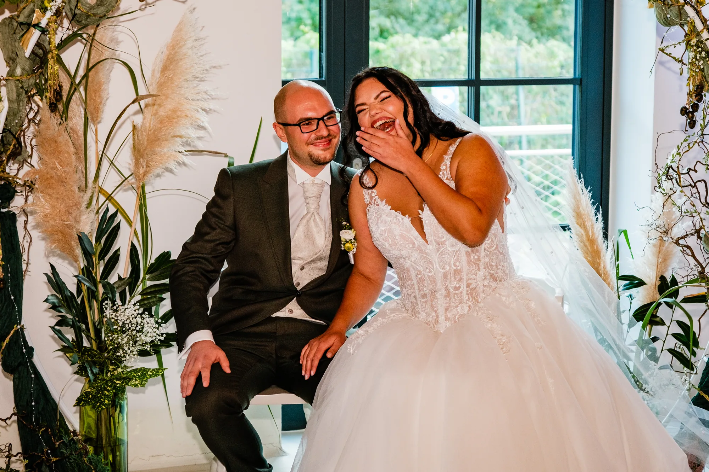
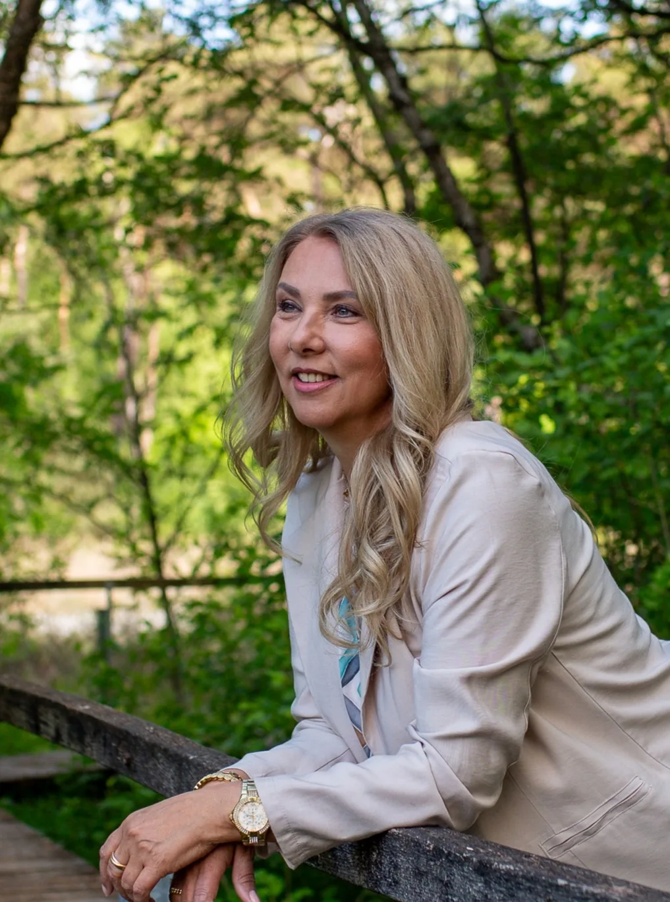
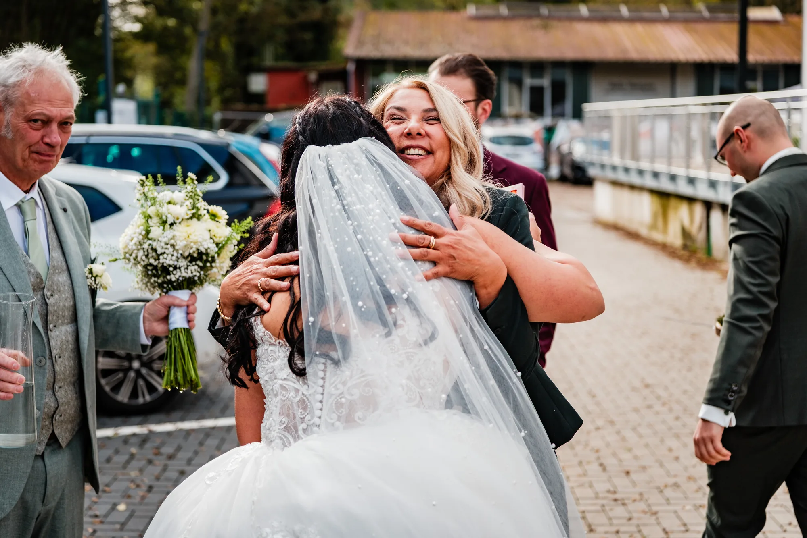
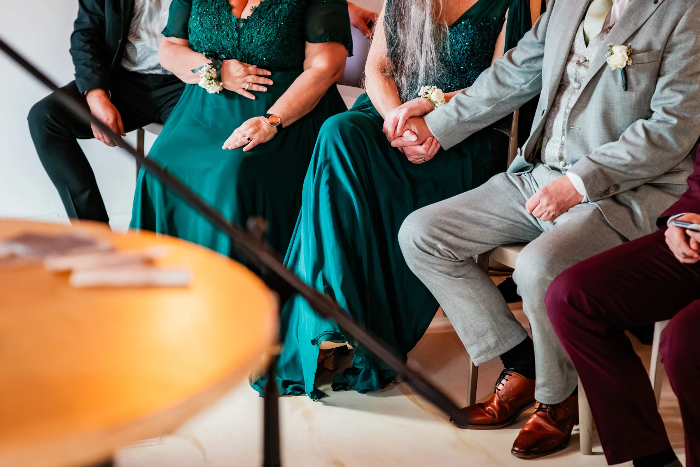
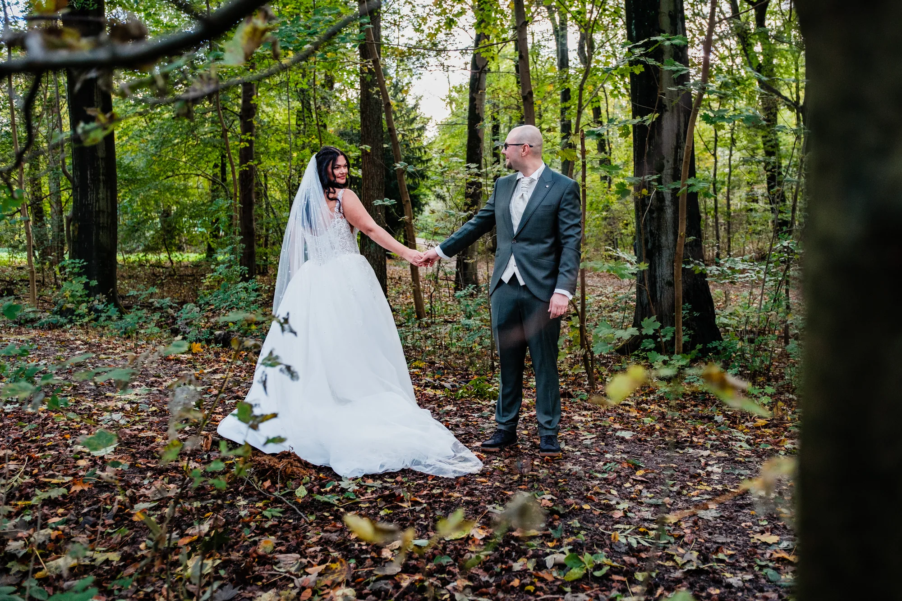

01
Freie Trauung
Eine Trauung, die sich nach euch anfühlt.
Warm, lebendig und frei von Standardsätzen. Eure Geschichte gibt den Ton an – mit Humor, Tiefe und Platz für echte Reaktionen.
Trauung besprechen ↗
Freie Rednerin · Bochum & NRW
Ich bin Britta – freie Rednerin mit Herz, Verstand und einer guten Portion Ruhrpott. Gemeinsam gestalten wir eine Zeremonie, in der ihr euch wirklich wiederfindet.

Worum es wirklich geht
Eine Zeremonie lebt nicht davon, wie viele schöne Sätze gesagt werden. Sie lebt davon, ob Menschen sich wiedererkennen, ob gelacht werden darf und ob Stille ihren Platz bekommt.
Ich höre zu, frage nach und finde mit euch heraus, was eure Geschichte besonders macht. Daraus entsteht eine Rede, die zu euch passt – nicht zu irgendeiner Vorlage.
02 / Zeremonien
Nicht nach Schema F. Sondern so, wie es zu den Menschen und dem Moment passt.
Freie Trauung
Warm, lebendig und frei von Standardsätzen. Eure Geschichte gibt den Ton an – mit Humor, Tiefe und Platz für echte Reaktionen.
Trauung besprechen ↗
Abschiedsfeier
Ein würdevoller Abschied mit Ruhe, Respekt und dem Menschen im Mittelpunkt – ohne Pathos, aber mit Raum für Erinnerung.
Abschied besprechen ↗Kinderwillkommensfest
Ein freies Familienfest voller Wärme und Leichtigkeit – persönlich gestaltet, mit Platz für Familie, Wegbegleiter und ein Augenzwinkern.
Willkommen planen ↗
03 / Stimme & Präsenz
Ich finde: Eine gute Rede darf berühren und zum Lachen bringen. Vor allem aber soll sie sich nach den Menschen anfühlen, um die es geht.
04 / Britta
Ich bin herzlich, direkt, neugierig und höre gerne genau hin. Als Rednerin, Autorin und Mentaltrainerin interessieren mich Menschen und ihre Geschichten – und als kaufmännische Führungskraft weiß ich, wie wichtig Verlässlichkeit und ein klarer Plan sind.

Alles kann. Nichts muss. Ihr entscheidet selbst.
Eine Haltung aus meinem Buch „Der Zebra-Pfad“, die auch meine Reden prägt.
Mehr über mich ↗05 / So entsteht euer Moment
Persönliche Reden entstehen nicht durch eine Vorlage, sondern durch gutes Zuhören und einen klaren Prozess.
Ihr schaut, ob die Chemie stimmt und ob Britta die richtige Person für euren Moment ist.
Im Gespräch geht es um die Menschen, die Details und die kleinen Dinge, die euch wirklich ausmachen.
Aus Gesprächen, Erinnerungen und Zwischentönen entsteht eine individuelle Rede mit eigener Dynamik.
Am Tag selbst könnt ihr loslassen. Britta hält den Rahmen – und ihr seid einfach mittendrin.
06 / Einblicke



Jede Geschichte ist anders. Hier bekommt ihr einen kleinen Eindruck von besonderen Momenten und liebevollen Details.
Portfolio ansehen ↗07 / Passt das?
keine Zeremonie wollt, die ihr schon fünfmal irgendwo gehört habt.
Humor mögt, ohne dass Gefühle zur Show werden.
eine Rednerin sucht, die zuhört – und auch mal direkt nachfragt.
am Ende sagen wollt: Genau so hat es sich nach uns angefühlt.
08 / Fragen
Die wichtigsten Punkte kurz und unkompliziert.
Freie Trauungen, Abschiedsfeiern und Kinderwillkommensfeste.
Britta sitzt in Bochum und arbeitet in NRW. Alles Weitere lässt sich am besten direkt im Kennenlerngespräch abstimmen.
Mit einem unverbindlichen Kennenlernen. Dabei merkt ihr schnell, ob Stimme, Haltung und Chemie zu euch passen.
Ja. Die Stimmprobe könnt ihr direkt hier auf der Startseite anhören.
09 / Kennenlernen
Kein Verkaufsgespräch. Einfach schauen, ob es menschlich passt.